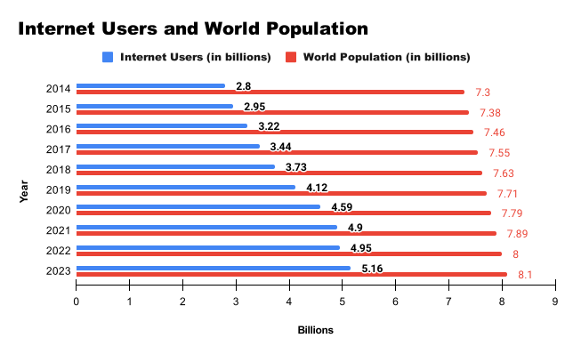
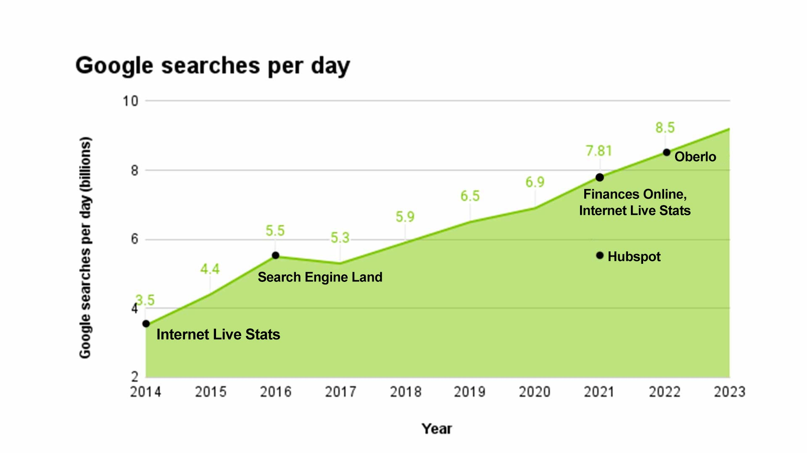
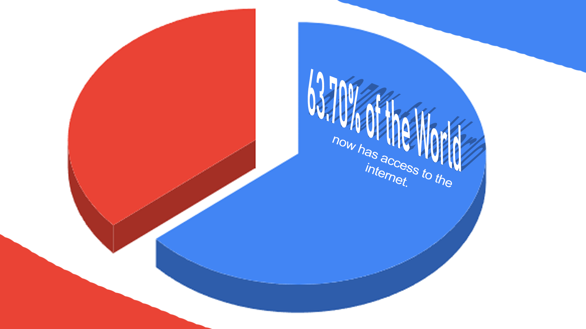
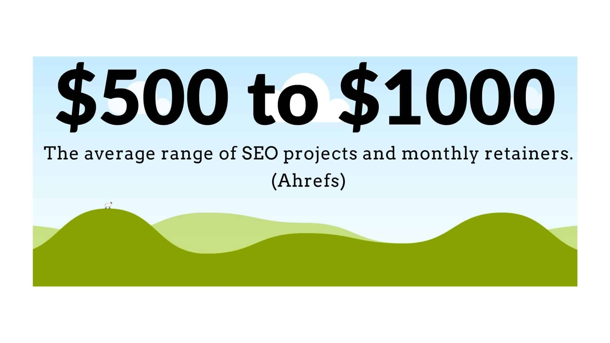
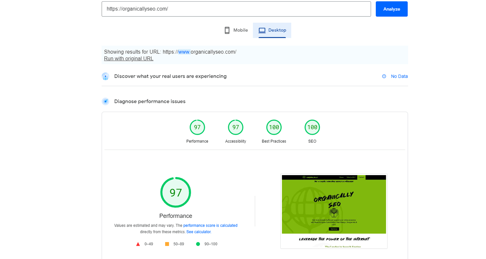

The average person makes 3-4 searches on Google per day. I think I make about 400.
But Google isn't magic. I mean, the power to access hundreds of billions of webpages and the entire planet's collective knowledge in less than a second is basically magic. But, there's more to the story.
A search engine like Google is a library. Websites are its books. The results you see when completing a search are the books' individual pages.
Every question you pose to a search engine returns an answer. Answers are just pages in the library that Google thinks will best answer your search.
But the order you see search results isn't just a guess. It's an algorithm.
To harness the power of search engine algorithms is to optimize for them. Thus the term Search Engine Optimization was born. SEO in its simplest form is creating content that satisfies searches and getting links from other sites.
Pages on your website need to satisfy search intent, or the reason people are searching. That means, you won't be squeezing your "book a call!" page into the top results of a search looking for a step-by-step guide.
Search Engine Snacks
Over 5.16 billion. This number has grown from 2.8 billion in the last 9 years, as more of the world acquires access to computers, the internet, and mobile devices. Almost two thirds or 63.70% of the world now has access to the internet.
1. At least 6.45 billion. Many say 3.5 billion searches happen per day (Internet Live Stats) but that metric is almost a decade old (2014). Internet usage has increased by 84.29% since 2014.
Reports on this metric are a little mixed, since Google doesn't normally disclose their numbers. According to Hubspot, 5.6 billion searches were happening daily in 2021. Oberlo says 8.5 billion daily searches happen in 2023. Assuming daily google searches has grown by roughly 84% since 2014, the number is likely closer to 6.45 billion searches per day.
The effects of COVID and advancements in technology have kept the world on their phones and computers more every day. Global daily searches could very well have reached 9 or 10 billion by now.
3. 90.63% of webpages get zero organic search traffic from Google. (Ahrefs)
4. Google dominates the search engine market share at 92%.
5. Google search (pay-per-click ads) acquire 5 billion daily interactions (Hubspot).
6. 75,000 to 100,000 searches happen on Google every second.
Now back to it. SEO is the processes and strategies of optimizing a website for search engines. But what makes a website optimized?
2. How do I get organic website traffic?
Woah now. Slow down there tiger. It's important to understand some basics of how search engines work, before you understand how optimizing a website gets you organic traffic.
Here’s how a search engine works fundamentally in 2 steps:
1. Someone searches on Google for something. (really complex idea)
2. Search engines try to give users the best result for any search query.
Search queries include anything a user searches for.
Search engines give the best results as a list of websites (search engine results page, SERP) that it thinks will satisfy the search intent (the users’ reason for searching).
If a website has the right content and authority to answer the user’s Google search, they will be one of the first results displayed by the search engine.
Websites (domains) and individual pages (URLs) gain authority by other sites linking to them. If I link to your website, I've provided you a backlink. Backlinks are the lifeblood of ranking in search results. More on them later.
TELL ME HOW TO RANK MY WEBSITE #1
I'm getting to that. But I need to expand on something.
You're not going to get many backlinks directly to your home page or landing page (unless its providing some sort of useful tool or unique value).
But, that doesn't mean your homepage can't be #1 for your desired keywords. It can.
You become #1 in your niche by producing content with linkable value in blogs or info pages. Blogs are different from your "money pages."
Linkable value pages are used as a stepping-stone to get links, and propel the rest of your website to rank well.
The backlinks that informational pages acquire help other pages on your website to rank better. Ahrefs' refers to this strategy as The Middleman Method.
So, provide value in a blog post that's separate from your website's home page. It should link to other pages on your site.
Then acquire links for that post. (Usually with the help of a friendly neighborhood SEO connoisseur).
Proceed to skyrocket your money pages.
But even if you execute a tactic like this perfectly, search engines take awhile to rank your website.
How long does SEO take?
A short answer would be not immediate. But search rank can be improved quicker than some may think.
Many optimizers say it takes anywhere from 4 months to a year to see any meaningful results. Some even say you won't see any good results even in the first year.
However, recent data suggests over two thirds of SEO experts admitted that you can see SOME results in as early as 2-4 months.
(MorningScore)
While I would agree SEO is a longer-term play, domains can start ranking pretty quickly if they're getting some buzz.
The process of getting impressions on Google can be accelerated by generating reviews on your Google Business Profile. You can also manually request Google to crawl and index your pages.
Your website can be first in the business profile results without many backlinks at all.
This Dream Greener company is in the top results mainly for reviews on Google.
The bottom arrow points to the first search result. Angie's list is ranking first for this query because they have a really authoritative domain. This is where your backlinks come into play.
Just don't underestimate the power of Google Business Profiles because they're a quick way to get on the map.
I've seen clients with some reviews get impressions in under a month after they made their business profile. You can do it too.
How much does SEO cost?
It usually depends on how much you want to invest in your SEO. he most common pricing for SEO projects and monthly retainers is in between $500-1000.
Campaigns for bigger companies cost anywhere from $2,500-10,000 monthly (OuterBox).
It all really depends on what clients want to budget for. SEO software isn't cheap and executing effective campaigns is time-consuming.
Whatever your budget may be, any efforts toward SEO are usually rewarded.
3. So why do pages rank again?
Content that answers the users' search, or satisfies search intent will rank in results. Focus on making quality content that people want to read and share.
But even if you answer the search query perfectly, your page won't rank the best it can for competitive keywords without some backlinks.
Content is love, backlinks are life.
Your page ranks in results for keywords you have on the page.
Keywords are at the very foundation of what is called On-page SEO. And every page should have some target keywords.
These are words important to your business. You can find relevant keywords using someone with SEO Software, or use a free version like Ahrefs Keyword Generator Tool.
Ideally, the words on your page should match the user’s search query.
So include your target keywords in your main headings. Data suggests including your target keywords in other ways helps too.
Context matters with keywords and google indexes pages not only for bigger, main idea words, but for all words on a page.
Obviously, a web page should not contain only the words you want to rank for in a Google search.
So keywords with context around them are important.
4. On-page Search Engine Optimization
Search engines pay attention to heading structure and hierarchy a lot.
The main title or heading of a page should be the biggest, loudest text when a user first arrives at a page. This is called the Heading 1 or H1. Your H1 is the main idea of your page and should contain your target keywords.
Headings 1-6 get smaller and smaller as they title sections that have more and more details throughout a page.
Headings should tell Google generally what the content on a page is about and the size of text symbolizes the importance of each topic in a way. Your target keywords can be in your H2 and H3 as well.
Naturally, the H6 at the bottom of the page won't be as important as the H1. But, you have to guide Google down the rabbit hole to index necessary pages on your website.
Internal links are another ranking signal. They're links pointed at pages on your own website.
Any site with more than one page should have links to other pages on its domain to provide ease of access to users, and search engines alike. These links can pass pagerank as well.
For example, this is an internal link to my homepage. If the blog you are currently reading gets a ton of backlinks, and I have a link to my homepage on it, it will pass some power to that homepage.
Internal links also play a role in the ease of navigation for users. If it is easy to hop around your site in the eyes of Google's robots that scan and index your pages, it is probably accessible from a user experience perspective.
A positive user experience helps your ability to be in the top results. You should keep track of several other metrics that can influence your rank too.
Going from the 86th site to the 14th shown by a search engine on any given search could mean thousands more website visitors for you.
It is pretty difficult to be 14th let alone in the first few results without a network of websites providing you links.
5. Backlinks
In many ways, backlinks are the door to organic web traffic. Among many other ranking factors, the amount of backlinks determines how high you rank. Of course, all principles of optimizing websites for search work hand in hand to get a site on the google podium (on the first page of search results).
But, an extensive backlink profile will do wonders.
It's how well-known you are throughout the web. And how many backlinks your entire website/domain has.
This authority is usually expressed as Domain Rating (DR).
The #1 result is ranking for that 98 Domain Rating. But the 15 backlinks don't hurt. So, the more backlinks your website has collectively, the better chances of any page you publish will have of getting on the first results page.
This is seldomly called Off-page SEO. But in essence makes sense..
Off-page SEO is everything that contributes to your search ranking that is not on your site. So basically backlinks. Google tools like Google My Business can really help your off-page or off-site SEO as well. If your business has a lot of good reviews it can propel your site's impressions in results.
These are Google My Business results. They're probably the first thing I tell people to have under control before an SEO Campaign.
But anyways, back to backlinks. Some are worth more than others. Backlinks from popular websites in your niche with a high domain rating are the best ones.
For example, a backlink from a page with thousands of organic traffic and a high DR is worth more than one from Joe Shmoe's blog with 0 backlinks.
The technical function of links on other sites plays a role too.
I know, it's a lot, but the attributes of another sites' links only pass authority to you if they are “Dofollow” links.
Any of this making sense?
The quality, quantity, and context of backlinks all matter!
So what are you waiting for?
Start optimizing!
To rank number 1 on Google for a certain niche, you’re going to need a strong combination of content, keywords, hierarchy, domain authority, backlinks, and all that.
None of those matter, though, if your website isn’t functioning efficiently.

6. Technical Search Engine Optimization
Technical SEO is the often-overlooked red-headed stepchild of SEO: the nitty-gritty details and under-the-hood components of your website.
That sentence was chalk-full of hyphens. Anyways, your site’s loading times and proper function contribute to how well you rank. If your website tends to freeze or do weird things when a user scrolls, this degrades the user experience and you will be penalized.
Google provides a free Page Speed test to diagnose any slow pages on your website.
More aspects of technical SEO include attaching a sitemap.xml file.
A sitemap lists a website's most important pages, thus, making sure search engines can find and crawl them.
Lastly, a robots.txt file is important in telling Google which pages to index on your website.
7. User Experience
User Experience (UX) is the user’s journey from the moment they find your site on google and start reading the title tag of your website (the list of blue links in search results are title tags), to the second they leave your site.
Whether they leave your site after a purchase or because of a bad user experience is up to you.
When someone lands on your homepage, or any page, the clicks, scrolls, animations, visuals, pictures and such are all considered aspects of user experience.
The canvas or surface that the user sees and interacts with on their screen is referred to as the user interface.
This is the design: colors, themes, pictures, content, headings, links, and paragraphs anyone can find or scroll past on your site.
These all need to be intricately woven in clear, accessible, emotion-inducing ways to keep users engaged.
A website’s design, aesthetic, and overall ability to WOW the user can be the x-factor in converting a cold visitor of your site to a paying, consuming client.
Perfecting your UX should be of utmost importance.
Because who cares if you get a bunch of traffic if none of your visitors are converted to clients.
What did we learn class?
As you can see, SEO is a culmination of a million things and can be pretty daunting.
On-page SEO like content, keywords, hierarchy.
Off-page contributors like the number of backlinks, their quality and functionality.
Technical aspects aka how the back-end of your domain functions on the internet properly and efficiently.
These all melt down and forge the user experience sword (I should trademark that).
I am writing this blog to further explain or brush up on some already well-known and practiced principles of search engine optimization. The landscape is always changing, so be sure to keep up with trending topics.